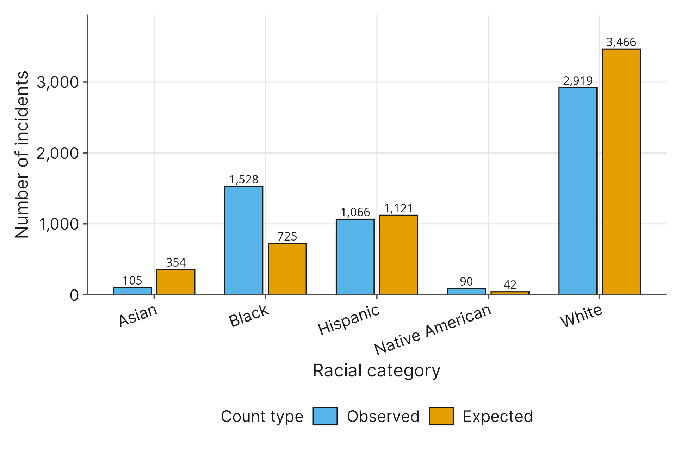
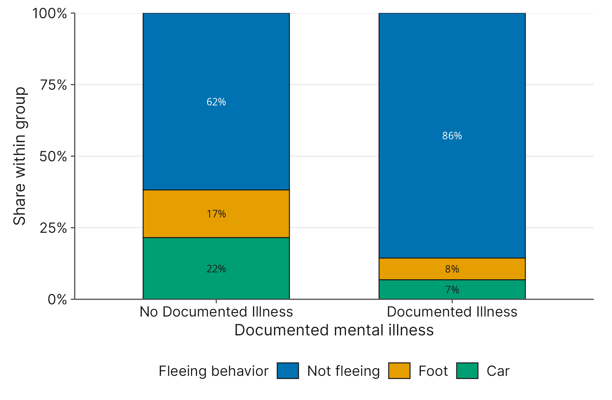
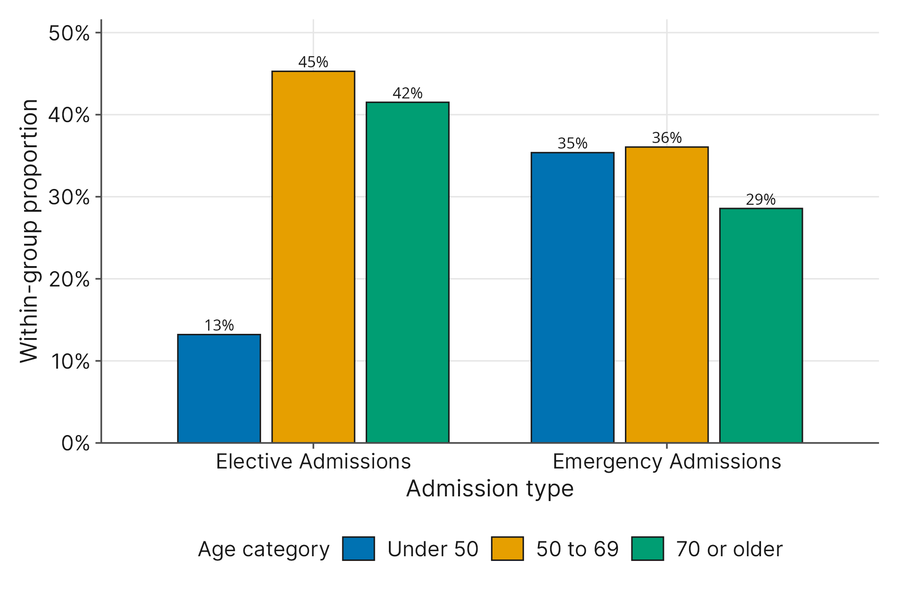
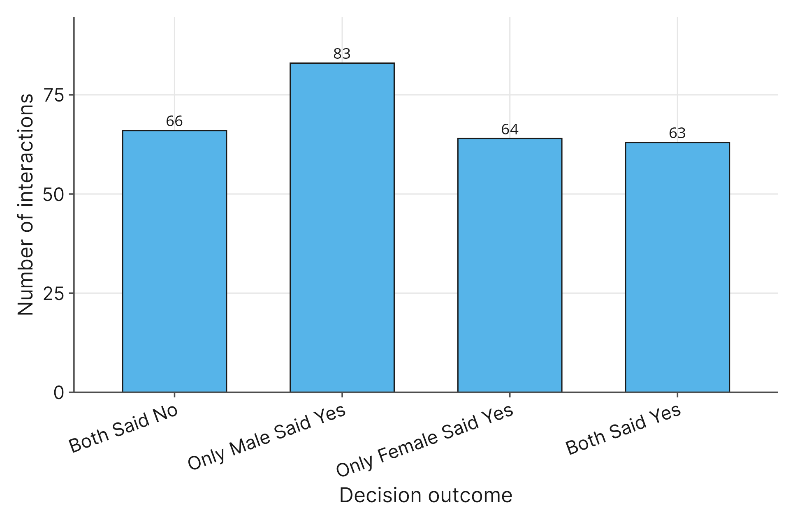
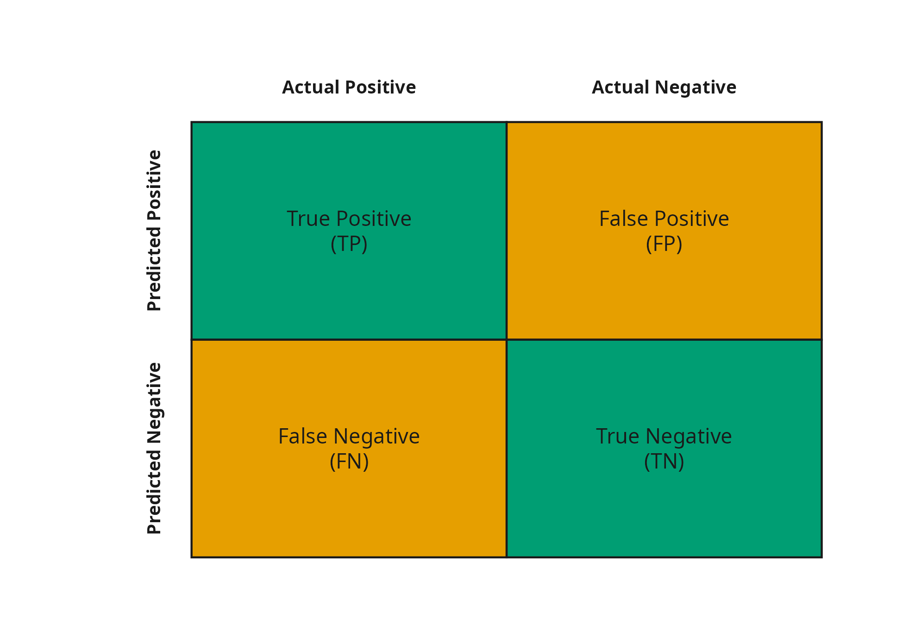

8 Categorical Data Analysis
8.1 Introduction
Our first questions that we’ll tackle in this chapter are simple but profound: Are any racial groups more likely to be involved in a fatal police shooting than others? If so, which ones?
These are meaningful questions with serious social implications, but how do we answer it objectively? Up until this point, we have largely relied on numerical averages and continuous scatterplots to evaluate our research questions. But you cannot calculate the “average” racial identity of a population. When a social scientist or investigative journalist studies police use of force, the data that matters isn’t always measured on a continuous scale. Instead, it is often categorized into distinct demographic groups, behavioral choices, and binary outcomes.
To answer questions like the one above, we need a new set of statistical tools designed specifically for categorical data. Instead of asking how much a numerical measurement changes, we will be working with counts and percentages. We will ask whether our observations align with what we would expect by random chance, or if there is a systematic, underlying relationship at play.
The fatal_police_shootings.csv dataset is derived directly from an ongoing investigative database maintained by The Washington Post, which was launched to address a lack of comprehensive, centralized tracking at the federal level. The database relies on local news reports, public records, and independent verification to log fatal shootings by on-duty police officers in the United States.
As we work through the chapter, we will analyze several structural variables designed to classify the circumstances of each encounter:
race: A categorical variable noting the racial or ethnic background of the individual.threat_level: A categorical classification of the immediate threat posed by the individual (e.g., attack, other, undetermined).armed: A categorical variable indicating the type of weapon or implement the individual possessed that responding officers believed could inflict physical harm.flee: A categorical variable describing the individual’s movement behavior during the encounter (e.g., foot, car, or not fleeing).signs_of_mental_illness: A categorical indicator of whether the individual had documented acute mental distress or psychiatric history.body_camera: A categorical variable indicating whether a responding officer was equipped with an active body-worn camera during the incident.
We will start this chapter by answering our opening question, learning how to compare our observed categorical counts against known theoretical baselines (like general U.S. Census population weights) to test if a specific group is disproportionately represented. From there, we will expand our scope to analyze two variables at once, allowing you to determine if distinct categorical factors (such as a subject’s behavior and the deployment of a body camera) are associated with one another or operating independently. By the time we finish, you will have moved beyond simply identifying relationships to quantifying the strength of those connections and measuring the specific risks associated with different categorical groups.
8.2 Single Variable Patterns: The Chi-Square Goodness-of-Fit Test
At the start of this chapter, we asked a key question: are any racial groups disproportionately involved in fatal police shootings? Before we can answer if something is disproportionate, we first have to define what “proportionate” looks like. If a researcher wants to know if a specific demographic is over-represented, they cannot rely on the raw counts alone. For example, finding that there are 2,919 White individuals in our sample compared to 90 Native American individuals does not inherently prove a specific demographic targeting, because there are significantly more White individuals in the general United States population.
To determine if the numbers we see are unusual, we have to compare them against a theoretical baseline. In this scenario, our baseline is the demographic breakdown of the U.S. population provided by the Census Bureau. If fatal police encounters were random and unrelated to racial identity, we would expect the racial distribution of the incidents to mirror the general population.
The statistical tool we use to formally test this relationship is the Chi-Square Goodness-of-Fit Test, which evaluates whether the distribution patterns of a single categorical variable match expected baseline frequencies.
8.2.1 Formulating the Hypotheses
Before running the test, it is critical to understand exactly what we mean by “distribution” in this context. We are tracking the overall percentage breakdown across all the categories of our variable simultaneously.
According to the 2020 U.S. Census, the baseline population distribution we are using for our test is 57.8% White, 18.7% Hispanic, 12.1% Black, 5.9% Asian, and 0.7% Native American.
Following our intuitive “human” formatting, we set our null hypothesis to assume that the world is operating exactly as our theoretical baseline predicts. Why do we do this? In research, the null hypothesis (\(H_0\)) represents the baseline of “no difference” or “nothing unusual is happening.” By assuming the data perfectly matches the Census, we give ourselves a strict, neutral starting point to test against. Our alternative hypothesis (\(H_1\)) assumes there is a deviation from that baseline.
- \(H_0\): The population distribution of the
racevariable in fatal police shootings \(=\) the 2020 U.S. Census population distribution. - \(H_1\): The population distribution of the
racevariable in fatal police shootings \(\neq\) the 2020 U.S. Census population distribution.
8.2.2 The Intuition Behind the Test
Instead of getting bogged down in formulas, let’s think about how this test works. Your statistical software is measuring how far reality deviated from our baseline expectation.
It does this by calculating the “expected” counts for every category if the null hypothesis were perfectly true, and then comparing them to the “observed” counts we have in our data.

As seen in Figure 8.1 above, the gaps between reality and our baseline expectation are visible:
- Black Individuals: We observed 1,528 records in the dataset. However, if the total incidents strictly followed the 12.1% Census baseline, we would only expect there to be about 725 records. Reality is noticeably higher than the baseline expectation.
- White Individuals: We observed 2,919 records. Based on the 57.8% Census baseline, we expected about 3,466 records. Reality is lower than the baseline expectation.
- Asian Individuals: We observed 105 records, but based on the 5.9% Census baseline, we expected about 354. Reality is lower than the expectation.
The Goodness-of-Fit test measures the size of the gap between the expected counts and observed counts for every single category, and aggregates those gaps into one overall test statistic. If the observed numbers are close to the expected numbers, the total gap is small, and we can chalk the minor differences up to random noise. However, if the gaps are large, the test recognizes that the data fails to fit our expected baseline.
8.3 Interpreting the Goodness-of-Fit and Post Hoc Analysis
When you run this test, the resulting \(p\)-value operates exactly as it did for the numerical tests we learned in previous chapters. A low p-value means there is strong evidence of a difference between the racial distribution of victims of police shootings and the racial distribution of Americans as a whole.
In the case of our fatal_police_shootings.csv data, the total gap between our observed counts and the expected Census counts is immense. As a result, the software outputs a \(p\)-value that is practically zero (\(p < 0.0001\)). Because the \(p\)-value is so low, we have overwhelming evidence to reject \(H_0\). Our conclusion is that the racial distribution of fatal police shootings is not the same as the demographic distribution of the United States.
8.3.1 Post Hoc Analysis: Standardized Residuals
A significant Goodness-of-Fit test only tells you that the overall distributions do not match. It does not formally isolate which specific racial group is over-represented or under-represented. To determine that, researchers must conduct a post hoc analysis (a test done after the fact) to pinpoint exactly where the largest deviations occurred.
In Chapters 4 and 6, we used residuals to measure the distance between our regression line or ANOVA model and the actual data points. We use the same concept here. For categorical data, statistical software can calculate a standardized residual for every single category. This number tells us exactly how much that specific group contributed to the overall significant result.
As a general rule of thumb, any standardized residual outside the boundaries of \(-2.0\) and \(+2.0\) indicates a significant deviation from the expectation.
- A large positive residual (greater than \(+2.0\)) means the group was significantly over-represented compared to the baseline.
- A large negative residual (less than \(-2.0\)) means the group was significantly under-represented compared to the baseline.
When we produce the standardized residuals for our police shooting data, we get the following results:
- Black: \(+31.9\)
- Native American: \(+7.4\)
- Hispanic: \(-1.84\)
- Asian: \(-13.7\)
- White: \(-14.8\)
The Hispanic category has a residual of \(-1.84\). Because this falls between \(-2.0\) and \(+2.0\), we conclude that the number of Hispanic individuals in the database aligns relatively well with general population expectations.
However, the residuals for the other four categories fall far outside that range. Black and Native American individuals have large positive residuals, indicating they are significantly over-represented in the database relative to their U.S. Census baselines. Conversely, White and Asian individuals have large negative residuals, indicating they are significantly under-represented compared to their demographic baselines.
8.3.2 Communicating Results in APA Format
When we write up our findings for publication or formal research reports, we need to communicate both the statistical evidence and the practical takeaway in a clear, standardized way. In the social sciences, this almost always means using APA format.
A strong APA write-up for a Goodness-of-Fit test does two things: it formally reports the results of the overall test, and it summarizes the findings of the post hoc analysis so the reader knows exactly where the differences occurred.
To write out the statistical evidence, we need four specific numbers from our software output:
- The Test Statistic: The actual \(\chi^2\) value calculated by the software.
- Degrees of Freedom (\(df\)): For this test, it is simply the number of categories minus one. Since we evaluated five racial categories, our \(df\) is \(4\).
- Sample Size (\(N\)): The total number of observations in our analysis. Adding up our observed counts gives us \(N = 5708\).
- The \(p\)-value: Our measure of evidence against the null hypothesis.
Here is how you would combine all of these elements into a formal APA conclusion:
A Chi-Square Goodness-of-Fit test was conducted to determine whether the racial distribution of fatal police encounters matched the 2020 U.S. Census population baselines. The results indicated that the observed frequencies were significantly different from the expected population distribution, \(\chi^2(4, N = 5708) = 1206.50\), \(p < .001\). A post hoc analysis using standardized residuals revealed that Black and Native American individuals were significantly over-represented compared to baseline expectations, while White and Asian individuals were significantly under-represented.
Notice how the statistics are embedded directly into the narrative sentence. The notation \(\chi^2(4, N = 5708) = 1206.50\) tells a fellow researcher exactly which test you used, the size of your dataset, the structure of your categories, and the mathematical result, all without interrupting the plain-English conclusion that answers our initial research question.
8.4 Two Categorical Variable Relationships: The Chi-Square Test for Independence
We have learned how to evaluate the distribution of a single categorical variable against an outside baseline. But what if we want to know if two distinct categorical variables inside our dataset are connected to one another?
Consider this research question: Does experiencing acute mental distress alter how an individual reacts during a high-stakes police encounter? To answer this, we will evaluate two variables from our fatal_police_shootings.csv database simultaneously:
flee: The subject’s movement behavior, categorized as “Car,” “Foot,” or “Not fleeing.”signs_of_mental_illness: A categorical indicator of whether the individual had documented acute mental distress or a psychiatric history.
When we want to know if a connection exists between two categorical variables drawn from a single sample, we use the Chi-Square Test for Independence.
8.4.1 Organizing the Data: The Cross-Tabulation
To answer a question involving two categorical variables, we first have to organize our data so we can see the overlaps. We do this by building a cross-tabulation (sometimes called a cross-tab or a contingency table).
A cross-tabulation takes one variable and places each category across the columns, takes the second variable and places its categories down the rows, and then counts how many observations fall into each intersecting cell.
Consider the cross-tabulation for our mental illness and fleeing data:
| Mental illness | Car | Foot | Not Fleeing |
|---|---|---|---|
| No Documented Illness | 941 | 727 | 2700 |
| Documented Illness | 94 | 105 | 1183 |
Reading this table is intuitive. If we want to know how many subjects with documented mental illness attempted to flee on foot, we find the “Documented Illness” row, move over to the “Foot” column, and find that there were exactly 105 occurrences.
8.4.2 Terms to Know: Independence and Association
Before we establish our hypotheses, we need to clarify a few statistical terms that are often used interchangeably in the social sciences: independence, association, and relationship.
In statistics, “independence” is a heavily overloaded word. In previous chapters on experimental design, we talked about independent observations, meaning one participant’s test score did not influence another participant’s test score. Here, however, we are talking about independent variables. Two categorical variables are considered independent if knowing the category of one variable gives you absolutely no information about the other. In other words, the two variables are unrelated.
If a test shows that the variables are not independent, researchers will say that the variables have an “association” or a “relationship.” For our purposes, “association” and “relationship” mean the same thing: the behavior of one variable is structurally connected to the behavior of the other.
8.4.3 Formulating the Hypotheses
If fleeing behavior and mental illness are truly independent, the percentage of subjects who attempt to flee by car, on foot, or not at all should be roughly the same regardless of their psychiatric history.
Following our established framework, the null hypothesis represents the baseline of “no relationship.”
- \(H_0\): Fleeing behavior is independent of documented signs of mental illness.
- \(H_1\): Fleeing behavior is associated with documented signs of mental illness.
8.4.4 The Intuition Behind the Test
The mathematical engine underneath the Test for Independence is exactly the same as the Goodness-of-Fit test. Your software calculates an expected baseline, and then measures the “gap” between reality and that expectation.
The difference lies in how the software calculates the baseline. Since we are no longer comparing our data to an outside source like the U.S. Census, the software uses the cross-tabulation itself to create a hypothetical scenario. It essentially asks, “If these two variables had absolutely zero connection to one another, what would this table look like?” It then compares that hypothetical, perfectly independent table to the counts we observed.

Looking at the graph above, we can visually inspect the relationship. By converting our raw counts into percentages, we create a level playing field. If the variables were perfectly independent, the colored blocks in the “Documented Illness” column would perfectly match the colored blocks in the “No Documented Illness” column. Any visual mismatch is a “gap” that the Chi-Square test will measure.
8.5 Interpreting the Test for Independence and Post Hoc Analysis
When we run this test, our statistical software evaluates the total gap between our observed combinations and the mathematically independent expectations. For our data, we get a test statistic of \(\chi^2 = 274.08\) and a \(p\)-value that is practically zero (\(p < 0.001\)). Because the \(p\)-value is significantly smaller than the standard \(0.05\) threshold, we reject \(H_0\).
This means the gap between the expected independent counts and our observed counts is simply too large to be a random coincidence. Fleeing behavior and documented signs of mental illness are statistically associated.
8.5.1 Post Hoc Analysis: Standardized Residuals in a Two-Way Table
Just like the Goodness-of-Fit test, a significant Test for Independence only tells you that a relationship exists somewhere in the data. It does not tell you exactly which combinations of categories are driving the association. To find out, we return to our standardized residuals.
Because we are now working with two variables, the software will output a standardized residual for every single combination (or “cell”) in our cross-tabulation. We apply the same rule of thumb we learned in Section 8.3: any residual outside the boundaries of \(-2.0\) and \(+2.0\) is a significant contributor to the relationship.
When we check the residuals for individuals with documented signs of mental illness, we find large deviations across the board:
- Mental Illness (Yes) & Fleeing (Car): A significant negative residual of \(-12.43\).
- Mental Illness (Yes) & Fleeing (Foot): A significant negative residual of \(-8.33\).
- Mental Illness (Yes) & Fleeing (Not fleeing): A significant positive residual of \(+16.46\).
What does this tell us practically? It reveals that individuals experiencing acute mental distress were significantly less likely to flee by car or on foot than we would expect by random chance, and significantly more likely to remain on the scene without fleeing.
8.5.2 Communicating Results in APA Format
When writing up the results for a Test for Independence, we format our statistics exactly as we did previously. The software provides the \(\chi^2\) test statistic, the degrees of freedom (\(df = 2\)), the total sample size (\(N\)), and the \(p\)-value.
A Chi-Square Test for Independence was conducted to evaluate the relationship between a subject’s fleeing behavior and documented signs of mental illness. The results indicated a significant association between the two variables, \(\chi^2(2, N = 5750) = 274.08\), \(p < .001\). A post hoc analysis of the standardized residuals revealed that subjects with documented signs of mental illness were significantly more likely to not flee, and significantly less likely to flee by car or on foot, than expected under independence.
Again, the purpose here is to make an easily interpretable description of our results, while also giving the reader the statistical context they need to evaluate the significance of our results.
8.6 Comparing Populations: The Chi-Square Test for Homogeneity
It is easy to confuse the Test for Independence with our next tool, the Chi-Square Test for Homogeneity. The mathematical engine calculating the “gap” under the hood is actually identical, but the research design is fundamentally different.
The Test for Independence uses a single sample and asks if two variables interact. The Test for Homogeneity takes two separate, predefined populations and asks if they share the same categorical profile for a single variable. The word “homogeneous” literally means “of the same kind.”
To see this design difference, we are going to switch to a new dataset: icu_data.csv. This dataset contains clinical records for 200 patients admitted to a hospital’s Intensive Care Unit.
Instead of analyzing one big pool of patients, we are going to use the Emergency variable to split our data into two distinct populations: patients admitted for Elective procedures (scheduled in advance) and patients admitted for Emergency procedures (unexpected traumas). We want to know: Do these two distinct populations share the same age profile?
8.6.1 Organizing the Data
Just as we did in the previous section, we start by organizing our counts into a cross-tabulation so we can see the exact breakdown of the AgeGroup variable across our two populations.
| Admission type | Under 50 | 50 to 69 | 70 or older |
|---|---|---|---|
| Elective Admissions | 7 | 24 | 22 |
| Emergency Admissions | 52 | 53 | 42 |
Looking at the table, we can immediately spot some differences. Out of the 53 elective admissions, only 7 patients were under the age of 50. In the emergency group, the patients under 50 make up a much larger chunk of the total. But as always, we must test whether this visual difference is statistically meaningful.
8.6.2 Formulating the Hypotheses
For this test, our null hypothesis states that the categorical age profile is identical across both populations.
When we say the distributions are identical, we practically mean that the proportion of people in any given age category is the same across both groups. For example, if we let \(\pi_{\text{Elective}}\) represent the true proportion of elective patients who are under 50, and \(\pi_{\text{Emergency}}\) represent the true proportion of emergency patients who are under 50, the null hypothesis assumes those two proportions are perfectly equal.
Our hypotheses should look like this:
- \(H_0\): \(\pi_{\text{Elective}} = \pi_{\text{Emergency}}\) (The proportions are equal for all age categories).
- \(H_1\): \(\pi_{\text{Elective}} \neq \pi_{\text{Emergency}}\) (At least one pair of proportions is not equal).
By writing it this way, we see that the Test for Homogeneity is simply a tool to evaluate if the proportions of a specific trait remain balanced across different populations.
8.6.3 The Intuition Behind the Test
If the null hypothesis is true, the percentage breakdown of the three age groups should look essentially identical regardless of whether you are viewing the elective wing or the emergency wing of the ICU.

To run the test, the statistical software combines both groups to figure out the “average” age profile for the entire ICU. It then uses that overall average as the expected baseline, applying it to both populations to measure how far reality deviated from that shared, homogeneous expectation.
8.7 Interpreting the Test for Homogeneity and Post Hoc Analysis
When our statistical software analyzes the cross-tabulated ICU data, it outputs a test statistic of \(\chi^2 = 9.39\) alongside a \(p\)-value of \(0.009\). Because our \(p\)-value falls below our standard \(0.05\) threshold, we have significant statistical evidence that the age profile for elective ICU admissions is not the same as the age profile for emergency ICU admissions.
8.7.1 Post Hoc Analysis: Standardized Residuals
Now we know the age profiles are different, but are all the age groups drastically different, or is the test being driven by one specific anomaly? To find out, we turn to the standardized residuals for our cross-tabulation, using our rule of thumb that any value outside the range of \(-2.0\) to \(+2.0\) marks a significant deviation.
Elective Admissions Residuals:
- Under 50: \(-3.03\)
- 50 to 69: \(1.18\)
- 70 or older: \(1.73\)
Emergency Admissions Residuals:
- Under 50: \(3.03\)
- 50 to 69: \(-1.18\)
- 70 or older: \(-1.73\)
Out of all six cells, only two cross our significance threshold, and both are in the Under 50 category: the Elective Admissions group has a residual of \(-3.03\), and the Emergency Admissions group has a residual of \(+3.03\). With only two groups, the residuals in each age column are mirror images: a shortage of young patients in one group is a surplus in the other.
This tells a fascinating story. The profiles of older patients (those 50 to 69, and 70 or older) align relatively well with baseline expectations across both admission types. The entire significant result is being driven by the fact that the elective admission group has a severe, disproportionate lack of young patients compared to the emergency group.
8.7.2 Communicating Results in APA Format
The formatting rules for the Test for Homogeneity mirror our previous tests. Based on our cross-tabulation, we know we have \(N = 200\) total patients in our sample.
A Chi-Square Test for Homogeneity was conducted to compare the age profiles of patients admitted to the ICU for elective versus emergency procedures. The results indicated that the age distributions were significantly different between the two populations, \(\chi^2(2, N = 200) = 9.39\), \(p = .009\). A post hoc analysis of standardized residuals revealed that this difference was primarily driven by a significant under-representation of patients under 50 years old within the elective admissions group and a matching over-representation within the emergency admissions group.
8.8 Choosing the Right Chi-Square Test and Checking Assumptions
Before we move on to new methods, let’s take a moment to organize the three Chi-Square tests we have just learned. Because the mathematical engine underneath all three tests is identical, statistical software will happily run whichever test you click. The software does not know how you gathered your data; it relies entirely on you to choose the correct framework.
To avoid making a critical design error, you can identify the correct test by asking yourself two simple questions about your data structure:
1. The Chi-Square Goodness-of-Fit Test
How many samples did you collect? One.
What are you comparing it to? An external, theoretical baseline (like the U.S. Census or a known historical average).
The Goal: To see if a single categorical variable in your sample matches the outside world.
2. The Chi-Square Test for Independence
How many samples did you collect? One.
What are you comparing it to? You are comparing two different categorical variables inside that same sample against one another.
The Goal: To see if two distinct traits (like fleeing behavior and documented mental illness) overlap in a systematic, associated way.
3. The Chi-Square Test for Homogeneity
- How many samples did you collect? Two or more distinctly defined populations (like elective vs. emergency ICU patients).
- What are you comparing it to? You are comparing the populations against each other on a single categorical trait.
- The Goal: To see if the proportions of that trait are perfectly equal across all the different groups.
8.8.1 The Required Assumption: Expected Counts
Throughout this chapter, we have relied on a single mathematical intuition: the Chi-Square test measures the “gap” between what we observed and what we expected, and then divides that gap by the expected count to scale it properly.
However, that mathematical engine has one major weakness. What happens if your expected count is incredibly tiny, like 1 or 2 people?
If you observe 5 people but only expected 1, your raw gap is 4. When the software divides that gap by the tiny expected count of 1, it acts like a mathematical magnifying glass, blowing the test statistic out of proportion. This scaling issue tricks the software into thinking there is a highly significant difference when it is actually just a random quirk of a small sample. This directly inflates your risk of making a Type I error (a false positive).
To prevent this from happening, statisticians use a strict rule of thumb: every single expected count in your table must be at least 5. (Note: We are checking the expected counts generated by the software, not the raw observed counts in your data).
If your software alerts you that an expected count has fallen below 5, the standard Chi-Square \(p\)-value is no longer trustworthy. When this happens, researchers must pivot to specialized tools designed for small samples, such as Fisher’s Exact Test, which we will cover in Unit V.
The “Observed Count” Trap: It is tempting to just rely on your raw data and assume that if every group has at least 5 people, your Chi-Square test is valid. This is a mathematical trap! Expected counts are driven by the overall averages, not just your specific group. If you have one group that is much smaller than the others, your expected counts can easily drop below 5 even if your observed counts are fine. Always check the expected counts generated by your software, not just your raw data.
8.9 Dependent Categorical Data: McNemar’s Test
We are now ready to tackle a slightly more complex question, although just why this is complex needs some explanation: Are men more likely to ask for a second date than women?
To answer this, we are going to shift our focus to a new dataset: speed_dating.csv. This data was collected during an experiment involving graduate and professional students who engaged in a series of four-minute speed dates. At the end of each round, participants filled out a scorecard rating their partner and, most importantly, indicating whether they would want to go on a real date with that person.
We will be looking specifically at the binary decisions from these interactions:
DecisionM: A categorical variable indicating the match decision from the male participant (\(1 = \text{yes}\), \(0 = \text{no}\)).DecisionF: A categorical variable indicating the match decision from the female participant (\(1 = \text{yes}\), \(0 = \text{no}\)).
8.9.1 The Problem with Independence (A Jargon Trap)
If we wanted to compare the overall proportion of “yes” decisions between men and women, you might logically think we could just use a standard Chi-Square Test for Homogeneity. We have two groups (men and women) and one categorical outcome (yes or no). However, there is a major structural catch.
Earlier in this chapter, we defined “independence” as two categorical variables having no association with one another. But in statistics, the word “independent” is also used to describe how data is gathered. Standard Chi-Square tests require independent observations, meaning one person’s data point has absolutely zero connection to any other person’s data point.
In our speed dating data, the observations are explicitly paired. A single four-minute interaction generates two distinct data points: the male’s decision and the female’s decision. Because these two people experienced the same four minutes, their decisions are inherently connected.
Imagine a specific date goes terribly; perhaps someone spills a drink, or the conversation is awkward. We would fully expect that shared interaction to result in a pair of “no” responses. It isn’t that the male’s “no” directly caused the female’s “no,” but rather that the two decisions were born from the same environment. Standard Chi-Square math falls apart when data points come in dependent pairs like this. To handle paired categorical data, we must use McNemar’s Test.
8.9.2 Formulating the Hypotheses
Our goal is to compare the overall proportion of men who said “yes” against the overall proportion of women who said “yes” across all the dates. We will define the population parameter \(\pi_M\) as the true proportion of “yes” decisions from males, and \(\pi_F\) as the true proportion of “yes” decisions from females.
As usual, the null hypothesis assumes there is no difference between the two dependent groups.
- \(H_0\): \(\pi_M = \pi_F\)
- \(H_1\): \(\pi_M \neq \pi_F\)
8.9.3 The Intuition Behind the Test
McNemar’s test relies on a clever, intuitive trick. When two people go on a date, there are exactly four possible categorical outcomes:
- They both say no.
- They both say yes.
- The man says yes, but the woman says no.
- The woman says yes, but the man says no.

If we want to figure out if men say “yes” more often than women, the dates where they both agree (both yes or both no) are useless to us. Those agreements do not shift the overall balance in either direction.
McNemar’s test essentially ignores all the interactions where the couple agreed. Instead, it looks strictly at the “disagreements.” As seen in Figure 8.4 above, we observe 83 instances where only the man said yes, compared to 64 instances where only the woman said yes. The mathematics our statistical software is doing for us acts as a balancing scale, checking to see if those two disagreement piles are roughly equal. If one group is significantly “heavier” than the other, the test will flag it as a meaningful difference.
8.10 Interpreting McNemar’s Test
When we run McNemar’s test in our statistical software, we evaluate the \(p\)-value exactly as we always have.
In our dataset of 276 interactions, the men did in fact say “yes” unilaterally more often than the women (83 times compared to 64 times). However, in statistics, we must ask if that gap is large enough to rule out random chance. The software outputs a \(p\)-value of \(0.138\). Because this \(p\)-value is large (well above the standard \(0.05\) threshold), we fail to reject the null hypothesis.
What does this mean in plain English? Even though we observed a slight imbalance in the disagreement piles, we do not have enough evidence to prove a systemic difference in dating behavior. The variation we saw could easily just be the result of random noise in this specific sample of students.
8.10.1 Post Hoc Analysis for McNemar’s Test
Because McNemar’s test addresses a constrained scenario (comparing a simple binary “yes or no” choice between two dependent groups), it operates entirely within a \(2 \times 2\) framework.
When you only have two groups, a significant overall test inherently tells you exactly where the difference lies. There are no extra categories to sort through. Because of this structural simplicity, formal post hoc testing is generally not required for McNemar’s test. If your result is significant, the final step is to compare the raw counts of the two disagreement cells to see which group had the higher rate.
8.10.2 Communicating Results in APA Format
When writing up the results for a paired categorical test, we follow the same general structure as the Goodness-of-Fit test. We state the goal, report the statistics, and provide a clear conclusion.
For McNemar’s test, our software provides the \(\chi^2\) test statistic, the degrees of freedom (which is always one for a \(2 \times 2\) table), the total number of paired observations (\(N = 276\)), and the \(p\)-value.
A McNemar’s test was conducted to determine if there was a significant difference in the proportion of male and female participants who desired a second date following a four-minute interaction. The results indicated that there was no statistically significant difference in the match decision rates between males and females, \(\chi^2(1, N = 276) = 2.20\), \(p = .138\).
8.11 Quantifying the Relationship: Association Metrics
In Chapter 3, we learned a fundamental lesson about hypothesis testing: a \(p\)-value only tells you if an effect exists; it does not tell you how large or important that effect is. A tiny \(p\)-value only means we have a mountain of evidence that the variables are connected.
When working with numerical data, we used effect sizes like Cohen’s \(d\) to measure the actual strength of the difference. For categorical data, we need a different set of tools to measure the strength of an association.
To see why this matters, let’s use two variables from our fatal_police_shootings.csv dataset. We want to evaluate the connection between the type of weapon an individual possessed (armed) and the overall classification of the immediate threat (threat_level).
Because our dataset contains over 6,000 observations, almost any slight variation from perfect mathematical independence is going to trigger a significant \(p\)-value. The \(p\)-value will tell us that weapon type and threat level are associated, but it will not answer the practical question: Does knowing the weapon type give us a large amount of information about the resulting threat level, or just a tiny bit?
To answer the practical question, we calculate an association metric (the categorical equivalent of an effect size).
8.11.1 Phi and Cramér’s V
There are two primary association metrics used in the social sciences for Chi-Square tests, and you choose between them based entirely on the shape of your cross-tabulation table.
- Phi (\(\phi\)): You use Phi strictly when you are analyzing a \(2 \times 2\) table. If you are comparing exactly two groups across exactly two outcomes, this is your metric.
- Cramér’s \(V\): If your cross-tabulation is larger than \(2 \times 2\), the mathematical boundaries of Phi begin to break down. Because our
armedfield has more than two categories and ourthreat_levelvariable has three categories (attack, other, undetermined), a cross-tabulation of the two is larger than \(2 \times 2\), so we must use Cramér’s \(V\).
Both of these metrics operate on a standardized scale from \(0\) to \(1\):
- A value of \(0\) indicates absolutely no association (perfect independence).
- A value of \(1\) indicates a perfect association (knowing the weapon category perfectly predicts the threat level every single time).
8.11.2 Interpreting the Metric
How do we decide if a number in the middle is meaningful? Fortunately, the statistician Jacob Cohen established a set of standard guidelines for interpreting these metrics.
If you are using Phi (\(\phi\)) for a \(2 \times 2\) table, the cutoffs are straightforward:
- Small Effect: \(0.10\)
- Medium Effect: \(0.30\)
- Large Effect: \(0.50\)
If you are using Cramér’s \(V\), interpreting the metric requires one extra step. Because adding more categories to a table naturally spreads the data out, the definition of a “strong” relationship shifts depending on the size of your cross-tabulation. To find the right cutoffs, you identify your two variables and count the number of categories in the smaller variable.
For example, if you are comparing a variable with 3 categories against a variable with 5 categories, you use the “3 Categories” row in the reference table below.
| Smallest Number of Categories | Small Effect | Medium Effect | Large Effect |
|---|---|---|---|
| 2 Categories (same as Phi) | 0.10 | 0.30 | 0.50 |
| 3 Categories | 0.07 | 0.21 | 0.35 |
| 4 Categories | 0.06 | 0.17 | 0.29 |
| 5 Categories | 0.05 | 0.15 | 0.25 |
Now let’s return to our police shooting analysis. The raw armed field contains dozens of specific entries, from “gun” and “knife” to “toy weapon” and “vehicle.” Keeping every entry would create a wide table, with many cells holding only a handful of incidents. That matters because the Chi-Square test from Section 8.8 requires every expected count to be at least 5.
To keep the test trustworthy, we group the field into three meaningful categories: Gun, Unarmed, and Other weapon (any other identified weapon or object). We also set aside incidents coded blank, “undetermined,” or “unknown weapon,” because those entries do not tell us what the person was holding. That leaves 5,963 incidents.
Here is exactly how the collapse works. The raw field has 99 distinct values when the blank is included, 98 of them nonblank. We set aside the blank, “undetermined,” and “unknown weapon,” which leaves 96 entries. An incident is coded Gun only when its entry is exactly “gun” and Unarmed only when its entry is exactly “unarmed.” The other 94 entries, including “knife,” “vehicle,” “toy weapon,” “BB gun,” and combination entries such as “gun and knife,” become Other weapon. Every incident in the analysis therefore falls into exactly one of the three groups.
| Armed group | Attack | Other | Undetermined |
|---|---|---|---|
| Gun | 2931 | 729 | 39 |
| Unarmed | 159 | 214 | 40 |
| Other weapon | 912 | 921 | 18 |
Because this table has three rows and three columns, Phi is not an option. We use Cramér’s \(V\), and because the smaller of the two variables has three categories, we read the “3 Categories” row of Table 8.3. Our software reports \(\chi^2(4, N = 5963) = 812.74\), \(p < .001\), and Cramér’s \(V = .261\). The smallest expected count is 6.7, so the expected-count assumption holds. A value of \(0.261\) sits above the \(0.21\) cutoff for a medium effect but below the \(0.35\) cutoff for a large effect, so we describe the association as medium. The pattern is visible in Table 8.4: gun incidents are mostly classified as attacks, while unarmed incidents are more often classified as other threats.
8.11.3 Communicating Results in APA Format
When you write up your final conclusions for a research paper, you should append the association metric to the end of your standard Chi-Square statistical reporting.
A Chi-Square Test for Independence was conducted to evaluate the relationship between weapon group (gun, unarmed, or other weapon) and the immediate threat level of the encounter. The results indicated a significant association between the two variables, \(\chi^2(4, N = 5963) = 812.74\), \(p < .001\), Cramér’s \(V = .261\).
8.12 Quantifying Risk: Relative Risk and Odds Ratios
In the previous section, we used Cramér’s \(V\) to measure the overall strength of an association. However, knowing that a relationship is “strong” does not always give us the practical, directional information we need.
In fields like medicine, public health, and criminology, researchers do not just want to know if two variables are connected. They want to answer a specific question: How much more likely is a specific outcome if a specific condition is present?
To explore this, we will return to our icu_data.csv dataset. We want to quantify the exact risk of our survival outcome (Survive) based on whether a patient had a suspected infection upon admission (Infection). Because both of these variables are binary (they only have two categories, coded as 0 and 1), we can use two powerful clinical metrics: Relative Risk and the Odds Ratio.
8.12.1 The Intuitive Choice: Relative Risk
The most natural way for humans to think about chance is through probability. If 20 out of 100 people experience an event, the probability (or “risk”) of that event is 20%.
Relative Risk (RR) takes the probability of an outcome in one group and divides it by the probability of that same outcome in a baseline group.
When our statistical software calculates the Relative Risk for our ICU data, it takes the probability of surviving for patients with an infection and divides it by the probability of surviving for patients without an infection. The software outputs a Relative Risk of \(0.83\).
Because this number is less than \(1.0\), it means the condition (infection) reduces the likelihood of the outcome (survival). We can interpret this in two intuitive ways:
- As a factor: Patients admitted with a suspected infection are 0.83 times as likely to survive their ICU stay compared to patients admitted without an infection.
- As a percentage: Patients with an infection are 83% as likely to survive. This represents a 17% decrease in the probability of survival compared to the baseline group.
The “Flipping” Trick
When you read published papers in the social sciences, you will notice that researchers almost always report Relative Risk as a number greater than 1.0. Why? Because generally speaking, we intuitively understand “1.2 times more likely” much better than “0.83 times as likely.”
To get a number greater than 1.0, researchers simply flip the fraction upside down, which changes who serves as the baseline:
\(1 / 0.83 = 1.20\)
By flipping the math, we just flip the sentence: Patients admitted WITHOUT an infection are 1.20 times as likely to survive compared to patients WITH an infection. Both sentences are mathematically identical; researchers just pick the one that is easier for their audience to read.
8.12.2 The Mathematical Workhorse: The Odds Ratio
If Relative Risk is so easy to understand, you might be wondering why you constantly see researchers reporting Odds Ratios (OR) instead.
To understand an Odds Ratio, we first have to understand “odds.” While probability compares the number of events to the total number of people, odds compare the number of events to the number of non-events. If you have 5 winning lottery tickets and 95 losing tickets, your probability of winning is 5 out of 100 (5%). But your odds of winning are 5 to 95.
An Odds Ratio takes the odds of an outcome in one group and divides it by the odds in the baseline group. When we run this for our ICU data, the software outputs an Odds Ratio of \(0.40\).
We interpret this by saying: The odds of surviving for a patient with an infection are 0.40 times the odds of surviving for a patient without an infection.
8.12.3 Interpreting the Strength of an Odds Ratio
Just like Cramér’s \(V\), we can classify the strength of an Odds Ratio. Statisticians have mathematically mapped Jacob Cohen’s famous effect size cutoffs directly onto the Odds Ratio scale.
However, Odds Ratios have a unique quirk: they are centered around 1 (which means the odds are equal), but below one the odds ratio can only go down to zero, and above one it has no upper limit, leading to a counterintuitive imbalance. An Odds Ratio of 2.0 (doubling the odds) represents the same strength of effect as an Odds Ratio of 0.50 (halving the odds). They are just moving in opposite directions!
Here are the standard, mapped guidelines for interpreting the strength of an Odds Ratio:
| Effect Size | Odds Ratio > 1.0 | Odds Ratio < 1.0 |
|---|---|---|
| Small Effect | 1.50 | 0.67 |
| Medium Effect | 3.50 | 0.29 |
| Large Effect | 9.00 | 0.11 |
Our statistical software output an Odds Ratio of \(0.40\). Looking at the “Odds Ratio < 1.0” column in Table 8.5, we can see that \(0.40\) falls right between a Small effect (\(0.67\)) and a Medium effect (\(0.29\)). We can conclude that arriving with an infection has a small-to-moderate negative impact on the odds of ICU survival.
(Note: You can use the “flipping trick” on Odds Ratios, too! \(1.0 / 0.40 = 2.50\). Looking at the left column, \(2.50\) also falls exactly between the Small and Medium cutoffs).
8.12.4 Why Use the Odds Ratio?
To a non-statistician, an Odds Ratio of \(0.40\) is deeply confusing. It sounds much more dramatic than the Relative Risk of \(0.83\), and it is hard to visualize a “ratio of odds” in your head. Why do researchers use this less-intuitive metric?
There are two major reasons, both rooted in the mechanics of research design:
1. Case-Control Studies and Retrospective Study Designs
Imagine you want to study a very rare disease. If you take a random sample of 1,000 people, you might not find a single person with the illness. To solve this, researchers use a retrospective design (often called a case-control study). They deliberately go to a hospital and select 50 people who already have the disease, and 50 people who do not, and then look backward to see what risk factors they had in common.
Because the researcher artificially fixed the total number of sick and healthy people at 50 each, the “total” denominator is rigged. You cannot calculate true probability (and therefore cannot calculate Relative Risk) when you artificially control the totals. However, because of a brilliant mathematical quirk, Odds Ratios hold perfectly stable regardless of how you gathered the data. If you are looking backward in time at data you curated by outcome, you must use an Odds Ratio.
2. Logistic Regression
Up until now, we have only analyzed relationships between two categorical variables at a time. But what if we wanted to predict ICU survival using infection status, the patient’s age, and their blood pressure all at the same time?
To do that, we need a predictive regression model. However, standard linear regression cannot handle a binary categorical outcome like “lived or died.” In advanced statistics, researchers use a tool called Logistic Regression to solve this. The fundamental mathematical building block of a Logistic Regression model is the odds ratio. By learning to interpret odds now, you are building the exact foundation you will need for advanced predictive modeling later.
8.13 Evaluating a Classification: Sensitivity and Specificity
In the previous section, we measured how much a condition (like infection) impacts the odds of an outcome. Now, we will explore how we can use information to predict an outcome.
In clinical and social settings, researchers often create simple rules to make rapid decisions. For example, a hospital might implement a protocol that says: “If a patient’s pulse is over 100 beats per minute, we will flag them as an emergency admission.” But is that rule actually accurate? Does a high pulse accurately predict an emergency, or does it lead to a flood of false alarms? To answer this, we use a specialized tool called a Confusion Matrix.
8.13.1 The Confusion Matrix
A Confusion Matrix is a specific type of \(2 \times 2\) table used to see how well a predictive rule aligns with reality. We take our actual observed reality (did the event actually happen?) and compare it against the prediction made by our rule (did the rule flag the event?).

When we evaluate any predictive rule, we get four distinct general outcomes. Let’s break down what these mean broadly, and how they apply specifically to the 200 patients in icu_data.csv:
- True Positive (The “Hit”): In general research, this means your rule correctly identified an event that occurred. For our ICU data, the patient had an emergency admission, and our pulse rule correctly predicted it.
- True Negative (The “Correct Rejection”): Generally, this means your rule correctly ignored something that did not happen. In our dataset, the patient had an elective admission, and our pulse rule correctly predicted it as a non-emergency.
- False Positive (The “False Alarm”): Generally, your rule claimed an event happened, but it actually did not. Here, the patient had an elective admission, but our pulse rule incorrectly flagged them as an emergency.
- False Negative (The “Missed Case”): Generally, an event truly happened, but your rule missed it. For our patients, they truly had an emergency admission, but our pulse rule failed to flag it.
8.13.2 Sensitivity and Specificity
To measure how well our rule works, we use two intuitive percentages: Sensitivity and Specificity.
1. Sensitivity (The True Positive Rate)
In any research context, sensitivity is your rule’s ability to find the exact thing you are looking for. It asks: Out of all the events that truly happened, what percentage did our rule successfully catch?
For our ICU triage rule, it asks: Of all the people who were actually emergency admissions, what percentage did our rule correctly catch? If a rule has high sensitivity, it is effective at identifying the target cases. A low sensitivity means the rule is missing too many actual events.
2. Specificity (The True Negative Rate)
In general usage, specificity is your rule’s ability to leave the non-events alone. It asks: Out of all the non-events, what percentage did our rule correctly ignore?
For our hospital scenario, it asks: Of all the people who were actually elective admissions, what percentage did our rule correctly identify as NOT being an emergency? If a rule has high specificity, it has a low false alarm rate. A low specificity means the rule is constantly flagging cases that do not need attention.
8.13.3 Applying the Rule to the ICU Data
Let’s apply the pulse rule to our ICU data. When we check our patients against our “Pulse > 100” rule, we get the following Confusion Matrix:
| Rule prediction | Actual: Elective | Actual: Emergency |
|---|---|---|
| Predicted: Elective | 38 | 82 |
| Predicted: Emergency | 15 | 65 |
- Sensitivity: We had 147 actual emergency admissions (\(82 + 65\)). Our rule correctly predicted 65 of them. That is a sensitivity of \(65 / 147 \approx \mathbf{0.442}\). This rule only catches about 44% of emergency cases.
- Specificity: We had 53 actual elective admissions (\(38 + 15\)). Our rule correctly identified 38 of them as elective (meaning it correctly avoided a false alarm). That is a specificity of \(38 / 53 \approx \mathbf{0.717}\). This rule has a specificity of about 72%.
8.13.4 The Sensitivity/Specificity Trade-off: Two-Stage Testing
This analysis teaches us a critical lesson about predictive rules: they almost always involve a mathematical trade-off. If we wanted to catch more emergency cases in our ICU (increasing sensitivity), we could lower our pulse threshold to 80. But by doing that, we would inevitably flag many more elective patients as emergencies, lowering our specificity and creating a wave of false alarms.
In practice, medical professionals and researchers manage this trade-off by using a two-stage testing process. When doctors screen for diseases like cancer, or when employers run initial drug tests, that first test is intentionally designed to have extremely high sensitivity. The primary goal of stage one is to make sure no true cases slip through the cracks.
Because of this built-in high sensitivity, the first test naturally produces a large number of false positives. If that initial screen comes back positive, clinicians do not immediately jump to conclusions. Instead, they order a second, often more expensive follow-up test. This second test is designed to have extremely high specificity, allowing doctors to correctly weed out all the false alarms generated by the first round. Calculating these metrics gives us a transparent view of exactly how many people a rule is helping, and how many it is unnecessarily alerting.
8.14 Common Mistakes and Misconceptions
The “Observed Count” Trap
It is tempting to rely on your raw data and assume that if every group has at least 5 people, your Chi-Square test is valid. This is a mathematical trap. Expected counts are driven by the overall averages, not just your specific group. If you have one group that is much smaller than the others, your expected counts can easily drop below 5 even if your observed counts are fine. Always check the expected counts generated by your software, not just your raw data.
Mixing up your table sizes for Cramér’s \(V\)
When checking your effect size on Jacob Cohen’s reference table, remember that you are looking for the number of categories in your smallest variable, not the degrees of freedom from your Chi-Square test. If you have a 3 by 4 table, your smaller variable has 3 categories. Do not try to use your test’s degrees of freedom of 6.
Letting the software pick your test
Because the mathematical engine is identical for the Test for Independence and the Test for Homogeneity, your statistical software does not know which one you are actually running. If you feed it a cross-tabulation, it will always output a \(p\)-value. It is entirely up to you to consider how the data was gathered (one sample versus two distinct populations) to correctly interpret what that \(p\)-value means.
Treating Odds Ratios like Relative Risk
Relative Risk scales with how our brains process percentages, but Odds Ratios do not. An Odds Ratio of 2.0 means the odds are doubled, but that does not necessarily mean the event is twice as likely to happen in terms of raw probability. Never translate an Odds Ratio directly into a percentage chance.
8.15 Key Concepts
- Chi-Square Goodness-of-Fit: A test used to compare a single categorical variable from a single sample against a known external baseline (like a historical average or census data).
- Chi-Square Test for Independence: A test used to evaluate whether two distinct categorical variables gathered from a single sample overlap in a systematic, associated way.
- Chi-Square Test for Homogeneity: A test used to determine if the proportions of a single categorical trait are equal across two or more distinct populations.
- McNemar’s Test: The required test for evaluating categorical outcomes when the data is dependent or comes in matched pairs (like speed dating partners or before-and-after studies).
- Standardized Residuals: The post hoc tool used after a significant Chi-Square test. Any cell with a residual outside the boundaries of \(-2.0\) and \(+2.0\) is considered a significant contributor to the relationship.
- The Expected Count Rule: To avoid inflating the risk of a Type I error, every expected count calculated by your software must be at least 5. This is driven by overall averages, not just raw observed counts.
- Association Metrics: Effect sizes for categorical data. Phi (\(\phi\)) is strictly for \(2 \times 2\) tables, while Cramér’s \(V\) is used for any cross-tabulation larger than \(2 \times 2\).
- Relative Risk vs. Odds Ratios: Relative Risk offers an intuitive comparison of probabilities between two groups. Odds Ratios compare the odds of an event, which is mathematically required for retrospective studies and serves as the foundation for future regression models.
- Sensitivity and Specificity: Metrics derived from a Confusion Matrix to evaluate predictive rules. Sensitivity measures the true positive rate (successfully catching target cases), while specificity measures the true negative rate (successfully avoiding false alarms).
8.16 New Notation
| Symbol | Meaning | Context |
|---|---|---|
| \(\chi^2\) | Chi-Square Test Statistic | The final scaled measurement of the “gap” between the observed data and the expected baseline. |
| \(\pi\) | Population Proportion | Used in our hypotheses to represent the true percentage of a category in the overall population (e.g., \(\pi_{\text{Elective}} = \pi_{\text{Emergency}}\)). |
| \(\phi\) | Phi | The effect size metric indicating the strength of an association in a \(2 \times 2\) cross-tabulation. |
| \(V\) | Cramér’s \(V\) | The effect size metric indicating the strength of an association in tables larger than \(2 \times 2\). |
| \(RR\) | Relative Risk | A ratio comparing the probability of an outcome between two groups. |
| \(OR\) | Odds Ratio | A ratio comparing the odds of an outcome between two groups. |
8.17 Exercises
8.17.1 Interpretation
- A public health researcher is analyzing a small sample of 40 patients to see if there is an association between a rare dietary supplement and a specific side effect. Looking at the raw cross-tabulation, every single cell has at least 6 people in it. However, when the software runs the Chi-Square Test for Independence, it flags a warning that an assumption has been violated. Explain the “Observed Count” trap and why this mathematical warning occurred.
- A sociologist surveys 500 randomly selected adults in a single city and asks them two questions: their primary news source (Cable, Print, or Social Media) and their voting frequency (Always, Sometimes, Rarely). They want to know if news source and voting frequency are connected. Another researcher takes 250 known Urban residents and 250 known Rural residents and compares their primary news sources. Explain which researcher should use the Test for Independence and which should use the Test for Homogeneity, and justify your answer based on their study designs.
- A criminal justice student wants to know if a police body camera alters a subject’s behavior. They record 100 encounters where a subject interacted with an officer before the officer turned their camera on, and then record the same 100 subjects’ behavior after the camera was activated. The student plans to put the “Before” and “After” behaviors into a standard Chi-Square Test for Homogeneity. Explain why this violates a core assumption, and state which test must be used instead.
- A medical clinic implements a new, highly sensitive screening test for a rare autoimmune disease. A patient tests positive and begins to panic, assuming the positive result has just proven that they have the disease. Using the concepts of the sensitivity/specificity trade-off, explain why the patient should not panic and describe the standard next step in clinical testing.
8.17.2 Choosing a Method
An education researcher has a database of 10,000 public high school students. They want to compare the distribution of the students’ chosen foreign language classes (Spanish, French, German, or Latin) against the historical averages published by the State Board of Education from ten years ago. Which specific statistical test should the researcher use?
A kinesiologist recruits 50 husbands and their 50 wives to participate in a dietary study. At the end of the study, each individual is asked a simple categorical question: “Did you find this diet sustainable? (Yes/No).” The researcher wants to know if the husbands were more likely to say “Yes” than their wives. Identify the research design and select the appropriate statistical test.
A marketing firm randomly samples 1,000 consumers and asks them to identify their favorite fast-food burger chain (McDonald’s, Wendy’s, or Burger King) and their primary generation (Boomer, Gen X, Millennial, Gen Z). They want to know if generational cohort and burger preference are associated. Identify the correct statistical test for this analysis.
8.17.3 Communicating Results
A journalist reads a published study analyzing the relationship between a suspect’s age group and whether a police encounter resulted in an arrest. The study reports a significant Chi-Square Test for Independence (p<.01). The journalist publishes a headline: “Study Proves Every Age Group Experiences Vastly Different Arrest Rates.” Explain the fatal flaw in this communication and identify the post hoc tool the researcher needs to use to see which specific groups differ.
A fellow student is presenting their research on the effects of a new study program on passing a difficult licensing exam. They ran an analysis and calculated an Odds Ratio of 3.0 for the students who took the program. On their slide, they write: “Students who take the program are 3.0 times more likely to pass the exam in terms of raw probability.” Explain why this interpretation of an Odds Ratio is incorrect.
You are reviewing a research paper draft written by a colleague. They ran a Chi-Square Test for Independence on a 3×5 cross-tabulation table (which has 8 degrees of freedom) and calculated a Cramér’s V of 0.18. Using the Chi-Square degrees of freedom, they consult Jacob Cohen’s reference table and claim this is a “Weak” effect. Explain their mistake and identify exactly how they should have determined the table size for interpreting Cramér’s V.
8.17.4 Software Application
For this section, you will use your statistical software to analyze the chapter datasets to practice the advanced categorical frameworks we just learned.
The Test for Independence and Association: Evaluating Body Cameras and Threat Levels: Using
fatal_police_shootings.csv, you want to evaluate if the presence of a police body camera (body_camera: True/False) is associated with the overall threat level of the encounter (threat_level: attack, other, undetermined).Create a cross-tabulation of these two variables. Visually, does the proportion of attacks seem drastically different when a camera is present?
Run the Chi-Square Test for Independence. What are the expected counts for the “True” body camera row? Did this analysis violate the expected count assumption?
Report the exact χ2 statistic, degrees of freedom, and p-value. Is there a statistically significant association?
Run a post hoc analysis of the standardized residuals. Identify any specific combinations (cells) that significantly deviate from the independent expectation (falling outside −2.0 to +2.0).
Calculate Cramér’s V. Using Cohen’s guidelines for this specific table size, how would you classify the strength of this relationship? f) Write a brief, formal APA-formatted conclusion for this analysis.
Risk, Odds, and Confusion Matrices: Evaluating Previous ICU Admissions: Using
icu_data.csv, you want to determine if having a previous admission within the last 6 months (PreviousAdmission: 0 = No, 1 = Yes) impacts or predicts the patient’s survival (Survive: 0 = No, 1 = Yes).Generate a 2×2 table with
PreviousAdmissionon the rows andSurviveon the columns.Calculate the Relative Risk of survival. Interpret this number as a percentage (e.g., “Patients with a previous admission are X% as likely to survive…”).
Calculate the Odds Ratio. Using the standardized cutoffs in Table 8.5, how would you classify the strength of this effect?
Now, treat
PreviousAdmissionas a predictive triage rule (Rule: “If they have a previous admission, predict that they will NOT survive”). Calculate the Sensitivity of this rule.Calculate the Specificity of this rule. Based on these two percentages, is having a previous admission a useful, accurate rule for predicting mortality?
Goodness-of-Fit: Evaluating Gender Demographics: Using
fatal_police_shootings.csv, you want to determine if the gender breakdown of the subjects (gender: M, F) matches the overall U.S. Census baseline. According to the Census Bureau, the population is roughly 49% male and 51% female. (Note: You must filter out any missing/unidentified gender rows before running this test).State the null and alternative hypotheses for this analysis.
Run the Chi-Square Goodness-of-Fit test comparing the observed sample to the 49/51 baseline expectation. Report the χ2 statistic and the p-value.
Based on the standardized residuals, which specific demographic is over-represented, and which is under-represented?
Write a brief, formal APA-formatted conclusion for this analysis.